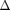

EXAMPLE: Solve Power Flow
This example shows how to use the QP_SolvePowerFlow function to solve the power flow.
Version . Qiu Qin, December 9, 2014. All Rights Reserved.
Contents
Load Data File
Run the data file to load power system data. Please refer to the data file for detail description of the data format.
clear;
run('QP_9B_data3m9b');
Three matrix describing the power system are stored in the data file. In this file, they are named as bus, line and mac_con. To solve the power flow, only bus data and line data are needed.
The bus data matrix consist of all information about the load flow. In the process of solving power flow, part of the bus matrix will be re-calculated. For swing bus, only the bus voltage and angle are used. Generator output active and reactive power are solved by power flow, regardless what value are specified in the data matrix For PV bus, only active power and voltage are used. Bus voltage angle and reactive power are solved by power flow, regardless what values are specified in the data matrix For PQ bus, only active power and reactive power are used. Bus voltage and angle are solved by power flow, regardless what values are specified in the data matrix
Solve the power flow and display results
The following shows an example of solving power flow.
disp('Power Flow Solution for Normal Operating Condition');
solvedBus = QP_SolvePowerFlow( bus, line, 1 );
Power Flow Solution for Normal Operating Condition
Bus Voltage Voltage Generator Generator Load Load
No. Magnitude Angle P Q P Q
1.0000 1.0400 0 0.7164 0.2705 0 0
2.0000 1.0250 9.2800 1.6300 0.0665 0 0
3.0000 1.0250 4.6648 0.8500 -0.1086 0 0
4.0000 1.0258 -2.2168 0 0 0 0
5.0000 0.9956 -3.9888 0 0 1.2500 0.5000
6.0000 1.0127 -3.6874 0 0 0.9000 0.3000
7.0000 1.0258 3.7197 0 0 0 0
8.0000 1.0159 0.7275 0 0 1.0000 0.3500
9.0000 1.0324 1.9667 0 0 0 0
Modify the data to remove a line and re-solve the power flow
The following shows an example of removing a line from the system and re-solving the power flow. Note that removing a line from the system creates a post-fault operating condtion.
modifiedLine = QP_RemoveLine( line, 5 );
disp('Power Flow Solution for Post-fault Operating Condition');
modifiedBus = QP_SolvePowerFlow( bus, modifiedLine, 1 );
Power Flow Solution for Post-fault Operating Condition
Bus Voltage Voltage Generator Generator Load Load
No. Magnitude Angle P Q P Q
1.0000 1.0400 0 0.8021 0.8198 0 0
2.0000 1.0250 30.2257 1.6300 0.2106 0 0
3.0000 1.0250 17.1931 0.8500 0.1272 0 0
4.0000 0.9956 -2.5574 0 0 0 0
5.0000 0.9380 -8.8294 0 0 1.2500 0.5000
6.0000 0.9748 0.3098 0 0 0.9000 0.3000
7.0000 1.0170 24.6174 0 0 0 0
8.0000 1.0010 18.0586 0 0 1.0000 0.3500
9.0000 1.0189 14.4594 0 0 0 0